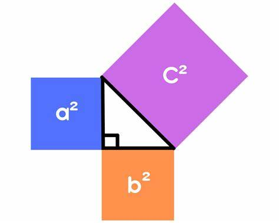
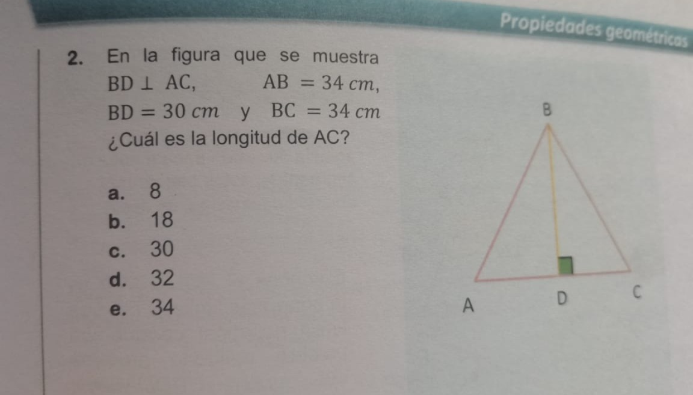

El Teorema de Pitágoras es una de las proposiciones más fundamentales y conocidas en la geometría. Establece una relación crucial en todo triángulo rectángulo. Un triángulo rectángulo es aquel que tiene un ángulo de 90 grados (un ángulo recto).
El teorema dice que:
"En todo triángulo rectángulo, el cuadrado de la longitud de la hipotenusa es igual a la suma de los cuadrados de las longitudes de los catetos."
Para entenderlo mejor, definamos los términos:
Hipotenusa: Es el lado más largo del triángulo rectángulo y siempre se encuentra opuesto al ángulo recto.
Catetos: Son los otros dos lados del triángulo que forman el ángulo recto. Matemáticamente, si llamamos a los catetos "a" y "b", y a la hipotenusa "c", la fórmula es:
a² + b² = c²
El teorema funciona como una herramienta para encontrar la longitud de un lado desconocido en un triangulo rectangulo cuando se conocen las longitudes de los otros dos lados. Se basa en la idea de que si construyeras un cuadrado sobre cada lado de un triangulo rectangulo, el area del cuadrado de la hipotenusa seria exactamente igual a la suma de las areas de los cuadrados de los dos catetos.
Por ejemplo, si tienes un triangulo rectangulo con catetos de 3 unidades y 4 unidades:
El Teorema de Pitagoras tiene numerosas aplicaciones en la vida real y en diversas disciplinas. Aqui te presento algunos ejemplos:
Caso 1: Encontrar la hipotenusa
Problema: Una escalera de bomberos se apoya contra un edificio. La base de la escalera esta a 6 metros de la pared del edificio, y la parte superior de la escalera llega a una altura de 8 metros en la pared. ¿Cual es la longitud de la escalera?
Aqui, la pared, el suelo y la escalera forman un triangulo rectangulo. Los catetos son la distancia de la base de la escalera a la pared (a=6 m) y la altura que alcanza en la pared (b=8 m). La hipotenusa es la longitud de la escalera (c).
Caso 2: Encontrar un cateto
La altura de la cometa, la distancia horizontal y la cuerda de la cometa forman un triangulo rectangulo.
La hipotenusa es la longitud de la cuerda (c=70 m).
Uno de los catetos es la altura de la cometa (a=50 m).
El otro cateto es la distancia horizontal (b), que es lo que queremos encontrar.
Aplicamos la formula: a² + b² = c²
50² + b² = 70²
2500 + b² = 4900
Restamos 2500 de ambos lados: b² = 4900 - 2500
b² = 2400
b = raiz cuadrada de 2400
b ˜ 48.99 metros
Respuesta: La cometa esta volando aproximadamente a 48.99 metros de distancia horizontal del punto donde se sostiene la cuerda.
Se usa cuando tenemos un triangulo rectangulo, o sea, uno que tiene un angulo de 90 grados. Lo que dice este teorema es que el cuadrado de la hipotenusa (el lado mas largo) es igual a la suma de los cuadrados de los catetos (los otros dos lados).
Formula:
c² = a² + b²
Donde:
ChatGPT: explica paso a paso, ideal para aprender. Muy eficiente.
Photomath: escanea problemas y los resuelve con pasos.
Microsoft Math Solver: similar a Photomath, da teoria y pasos.
Symbolab: excelente para algebra, bueno para geometria.
GeoGebra: visualiza construcciones geometricas.
IA: Divide el triangulo en dos, usa Pitagoras dos veces:
BD = 30, AB = 34 => AD^2 + 30^2 = 34^2 => AD = 16
BC = 34 => CD^2 + 30^2 = 34^2 => CD = 16
AC = AD + DC = 16 + 16 = 32
Estudiante: Descompuso el triangulo en ADB y CDB, uso la formula de Pitagoras en ambos y sumo AD y CD para obtener AC = 32.
Un angulo es la region del plano comprendida entre dos semirrectas (tambien llamadas lados del angulo) que parten del mismo punto, el vértice.
| Tipo de angulo | Medida en grados |
|---|---|
| Agudo | Menor de 90° |
| Recto | Exactamente 90° |
| Obtuso | Mayor de 90° y menor de 180° |
| Llano | Exactamente 180° |
| Concavo | Mayor de 180° y menor de 360° |
| Completo | Exactamente 360° |
El perímetro es la medida del contorno de una figura. Es decir, es la suma de las longitudes de todos sus lados.
El área es la medida de la superficie interior de una figura. Indica cuánto espacio cubre una figura en el plano.
Se usa para calcular cuánto espacio hay dentro de una figura, como el suelo de una habitación, un campo, una hoja de papel, etc.
| Concepto | Que mide? | Unidad tipica |
|---|---|---|
| Perimetro | Borde de la figura | metros (m), cm, km… |
| Area | Superficie que cubre | metros cuadrados (m²), cm²… |